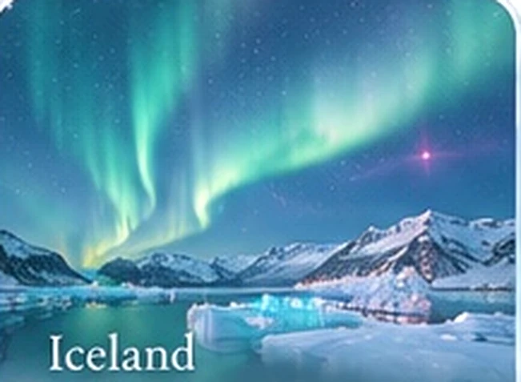
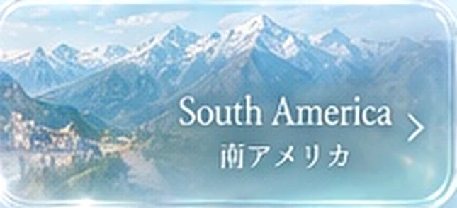
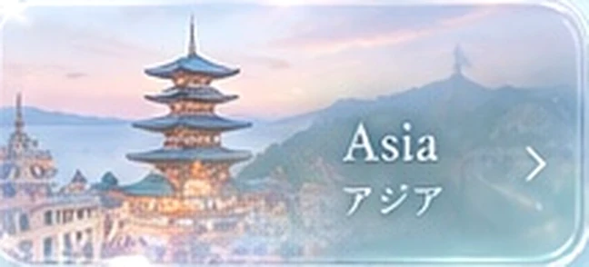
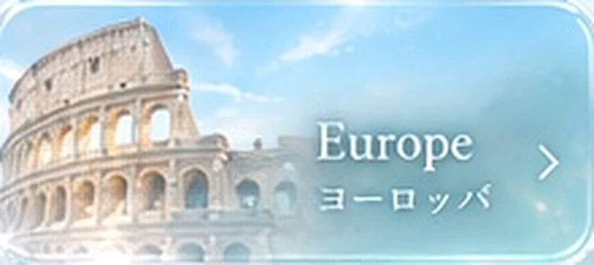
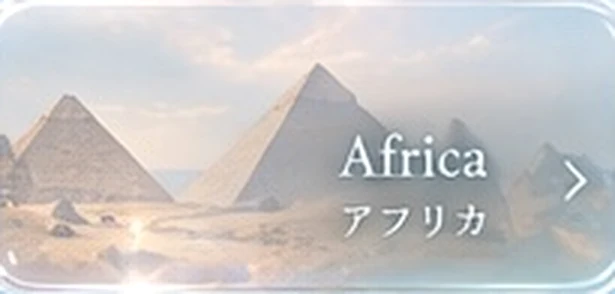

THE COLLECTION
Beach & Resort
透き通る海とリゾート
EXPLORE ↗
THE COLLECTION
Fairytale Cities
おとぎ話の街
EXPLORE ↗THE COLLECTION
Luxury Escapes
ご褒美ラグジュアリー
EXPLORE ↗
THE COLLECTION
Hidden Gems
心に残る風景
EXPLORE ↗
THE COLLECTION
Nature & Adventure
自然と冒険
EXPLORE ↗
THE COLLECTION
Solo-Friendly
ひとり旅
EXPLORE ↗
THE COLLECTION
Budget-Friendly
予算から旅へ
EXPLORE ↗THE COLLECTION
Winter Magic
冬の魔法
EXPLORE ↗THE COLLECTION
Summer Escape
夏の逃避行
EXPLORE ↗THE COLLECTION
City Wanderlust
街歩き
EXPLORE ↗
THE COLLECTION
Across the Centuries
歴史をめぐる旅
EXPLORE ↗THE COLLECTION
Design & Discovery
デザインの旅
EXPLORE ↗THE COLLECTION
Beyond the Familiar
冒険の旅
EXPLORE ↗特集の表紙はイメージビジュアルです。